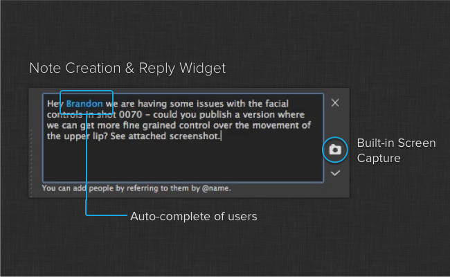

Flow Production Tracking Note Input Widget
The note editor widget makes it easy to add notes in Toolkit.
You can use the widget either to create or reply to notes. The editor includes screen grabbing capabilities and a user name auto completer. If you start typing @xyz, an auto completer will kick in and show matching groups and users. Once added to the note text, these users will automatically be included in the TO list in the case of a new note and in the CC list in the case of a reply.
NoteInputWidget
- class note_input_widget.NoteInputWidget(parent)[source]
Bases:
QWidgetNote creation and reply widget with built in screen capture capabilites.
- Signal data_updated:
Emitted when a note has been successfully created or replied to.
- Signal close_clicked:
Emitted if a user chooses to cancel the note creation by clicking the X button.
- Signal entity_created:
Emitted when a Shotgun entity is created, which will be either a Note or Reply entity, depending on situation. The entity dictionary, as provided by the API, will be sent.
- Parameters:
parent (
QWidget) – The parent QWidget for this control
- set_bg_task_manager(task_manager)[source]
Specify the background task manager to use to pull data in the background. Data calls to Shotgun will be dispatched via this object.
- Parameters:
task_manager (
BackgroundTaskManager) – Background task manager to use
- add_files_to_attachments(file_paths, cleanup_after_upload=False, apply_attachments=False)[source]
Adds the given list of file paths to the attachments list.
- Parameters:
file_paths – A list of file paths to attach.
cleanup_after_upload – If True, the given files will be removed once they are uploaded to Shotgun.
apply_attachments – If True, files added to the attachments list will be applied and ready for upload. This is normally handled by the “check” button when accepting user-added files, but if this method is used to procedurally add attachments then this option must be used to ensure that the files end up attached to the Note when it is created.
- allow_screenshots(state)[source]
Allows or disallows screenshots.
- Parameters:
state (
Boolean) – Allow or disallow screenshots.
NoteInputDialog
- class note_input_widget.NoteInputDialog(*args, **kwargs)[source]
Bases:
QDialogA dialog wrapper for the
NoteInputWidgetwidget.Constructor.